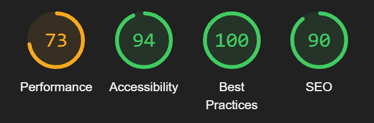
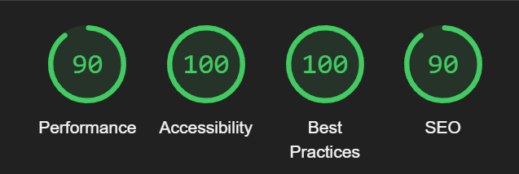
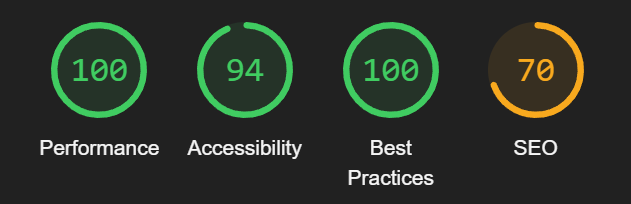
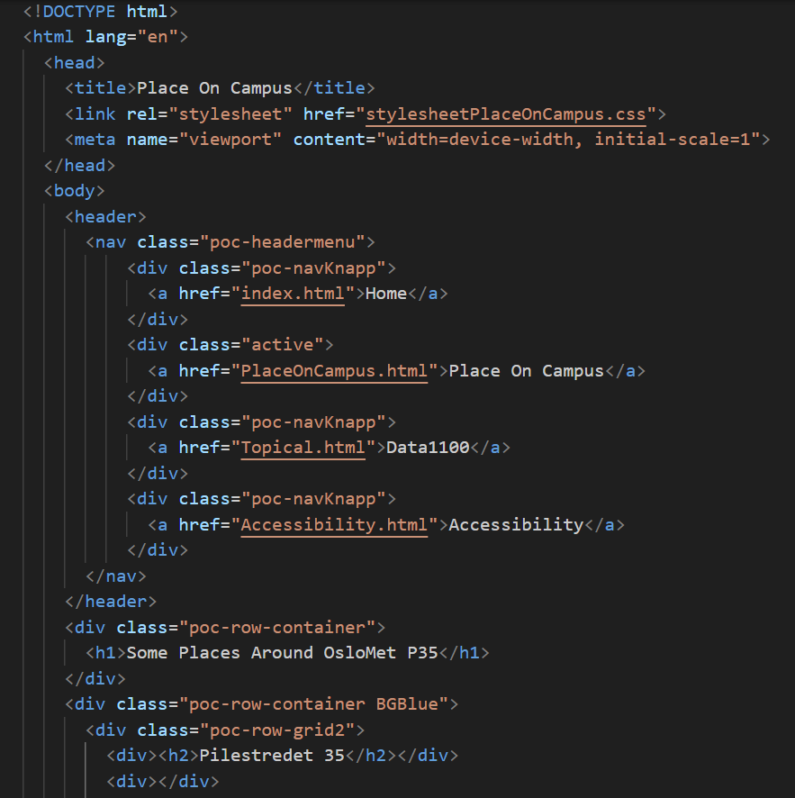

Accessibility
A brief presentation of the site's accessibility
Accessibility is truly important for a website to establish a user-friendly and inclusive design and online environment. To ensure that our website is accessible we have made coding choices that focus on universal design with multiple key elements, as well as running an automated accessibility test. Here is a short presentation of our coding decisions and the results of the automated tests.
A focus point when developing our code was using semantic elements in the HTML, such as heading, nav and article, that convey the meaning of the content and make it more accessible. We also created a responsive design so that the website would be able to respond to different devices and make size adjustments depending on what device the user operates on. Another key element implemented on the website is contrast and color choices that make the content more visible and help users with visual impairment read the content. Also, the content is clear and concise with plain language to make it easier to read and navigate. During the development of the website, we checked the code regularly to make sure everything worked, as well as making sure the site corresponded with the elements above. To get an overview of the site’s accessibility we also ran multiple automated tests to receive valuable information about the website. This test was done by using lighthouse, an automated tool that checks performance, accessibility, progressive web apps, and more. Lighthouse assesses loading time and how fast the page becomes interactive, how different elements work together in terms of contras ratios and whether the site uses the best practice for development. This feedback was essential to create a website that is accessible and focused on universal design, making the best possible experience for the user. When the test was completed we received an overview of the result in a number scale and gained access to comments and suggestions on how to improve.
Home page testing result By Albert
Place On Campus page testing result By Albert
Topical page testing result By Albert

Accessibility page testing result By Albert

Responsive design and layout example in CSS By Albert
Semantic elements in HTML By Albert
Examples of semantic elements that make the site more accessible. As seen in the picture above we have used header to define the content at the beggining of a section and nav to define a section that contains navigation links.